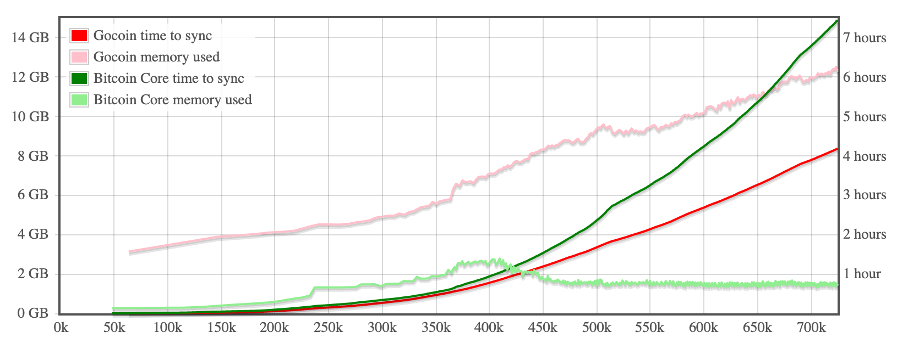
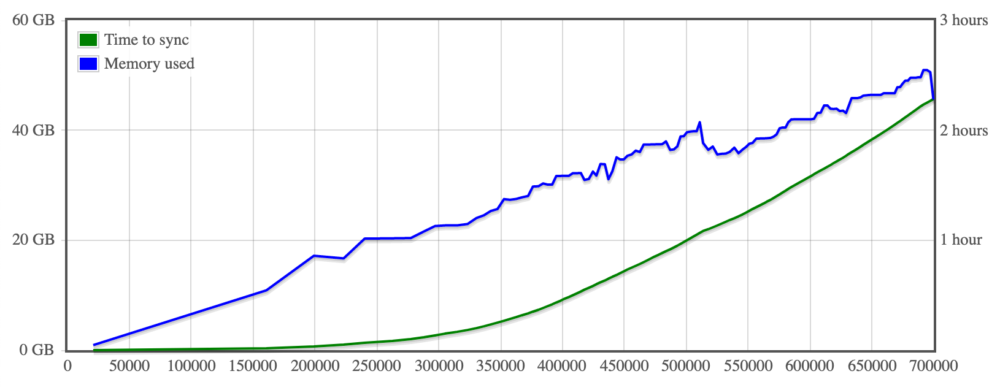
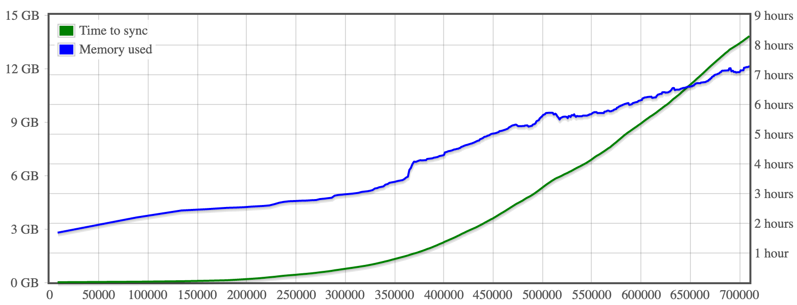

Performance
Charts below present system memory and time needed to sync BTC block chain up to the given block number.
Note: Gocoin uses configurable LastTrustedBlock parameter, to avoid verifying scripts from all blocks known as valid.
Gocoin 1.10.1, built with Go 1.18.3
Dedicated server with 3.4GHz Intel i7-6700 CPU and HDD
With comparision to Bitcoin Core 23.0:

Both the clients were using their default configuration.
Dedicated server with 3.6GHz Intel i7-7700 CPU and SSD - tweaked config*)

Dedicated server with 3.6GHz Intel i7-7700 CPU and SSD - default config

Dedicated server with 3.4GHz Intel i7-6700 CPU and SSD - default config

Time needed to re-build UTXO database from blocks stored on the disk: 1.28 hours
(up to block #700000)
Dedicated server with 3.4GHz Intel i7-6700 CPU and HDD - tweaked config*)

Gocoin 1.10.0, built with Go 1.17.3
Dedicated server with 3.5GHz Xeon E3-1270 v3 CPU and SSD

Time needed to re-build UTXO database from blocks stored on the disk: 1.6 hours
(up to block #700000)
Dedicated server with two 1.7GHz Xeon E5-2650L v2 CPUs and HDD

Time needed to re-build UTXO database from blocks stored on the disk: 2.6 hours
(up to block #700000)
*) Tweaked config values:
Net.ListenTCP: false
Net.MaxOutCons: 20
Memory.GCPercTrshold: 300
Memory.UseGoHeap: true
Memory.CacheOnDisk: false
AllBalances.AutoLoad: false
Stat.NoCounters: true